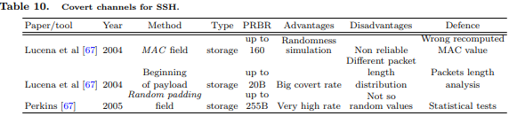

Secure Shell (SSH) is a cryptographic client-server protocol for secure data exchange, remote command execution,
and other secure network services between two computers that connects, via a secure channel over an
insecure network. Lucena et al [67] suggest the MAC field for carrying messages up to 160 bits per SSH PDU. To simulate the randomness of the MAC, the embedded messages are previously compressed and then encrypted
(Table 10). Another way is intermediate nodes to intercept the SSH traffic and inserts an additional encrypted
message (up to 20B) at the beginning of the already encrypted payload. A 4 byte “magic” number at the beginning
marks the presence of a hidden message. Hidden message can be carried in the Random padding field [93]
also, with length up to 255B.
